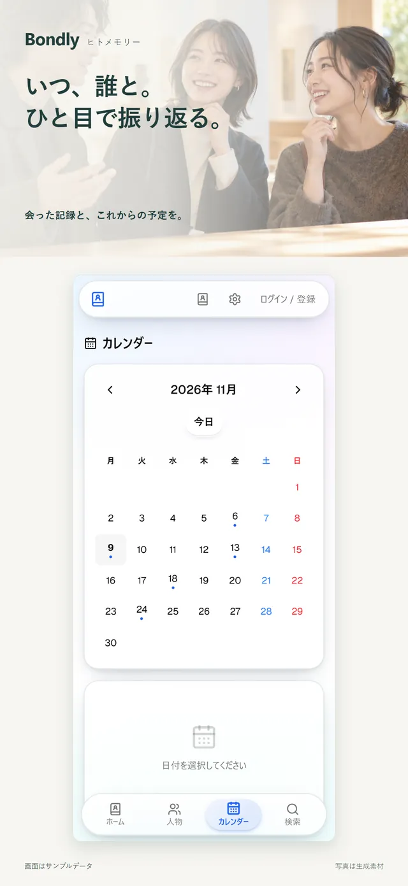
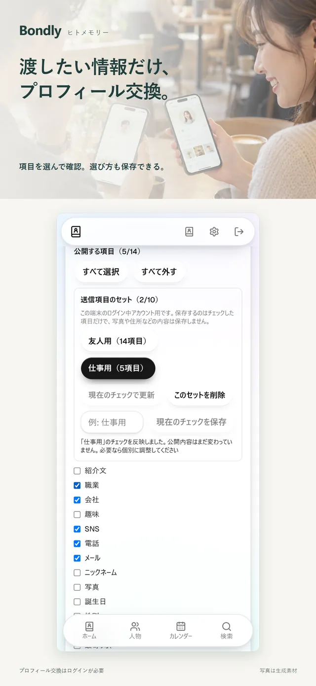
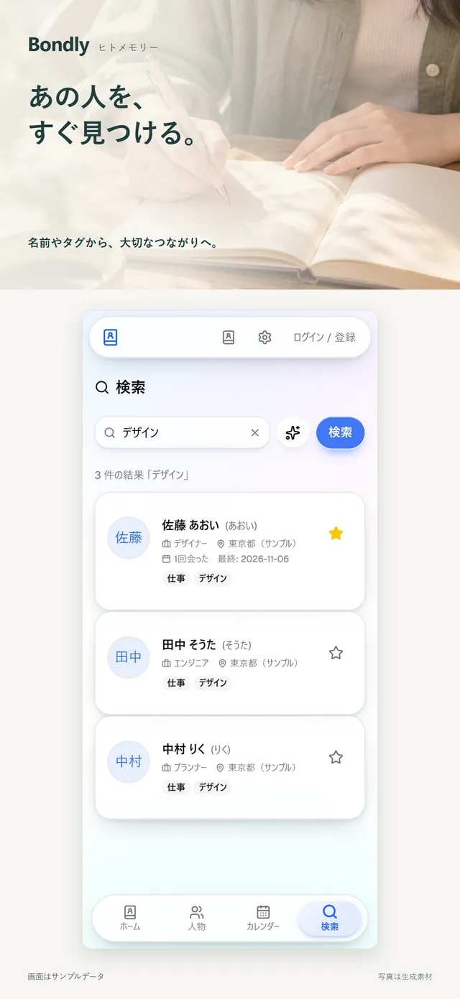
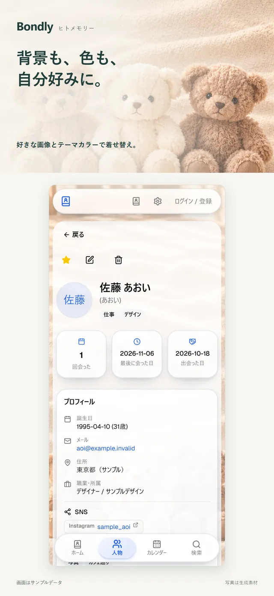

Bondly — ヒトメモリー
会った人のことを、ひとつの手帳に。
出会った人と交わした会話・予定を記録して、次に会うときに活かす人物手帳アプリです。

できること
人物の手帳
連絡先・SNS・仕事・趣味・タグ・メモを、人ごとにまとめて記録できます。
会った記録と次の話題
会った日・場所・話したことを残し、次に話したい話題もメモできます。
予定をカレンダーで
会った記録とこれからの予定を、カレンダーで振り返れます。
すぐ見つかる
名前やタグで検索。お気に入りの人も分かりやすく表示します。
選んだ項目だけプロフィール交換
渡す項目を選んで確認してから共有できます（ログインが必要です）。
背景も色も自分好みに
好きな画像とテーマカラーで着せ替えできます。
3ステップで使い方
-
ステップ1：人を登録
名前と、覚えておきたい情報を入力します。登録なしでも基本の記録が使えます。
-
ステップ2：会った記録を残す
会った日や話したこと、次に話したい話題をメモします。

-
ステップ3：次に会う前に見返す
カレンダーや検索から、その人の記録をすぐに開けます。

実際の画面
画面は App Store 掲載用の画像です。サンプルデータを使い、写真は生成素材です。
人物の詳細画面。プロフィールと会った回数・日付を表示します。 メモと「次に話す話題」、会った記録の画面。 会った記録と予定を表示するカレンダー画面。 
プロフィール交換で渡す項目を選ぶ画面。 
名前やタグで人物を検索する画面。 
背景画像とテーマカラーを変えた人物画面。
紹介動画（約36秒）
音声つきの縦長動画です。自動では再生されません。再生ボタンを押してご覧ください。
動画の内容
- あの人のこと、ちゃんと覚えていたい。
- 見つけて、開く。（人物一覧から探す操作）
- 渡すのは、選んだ項目だけ。（プロフィール交換はログインが必要）
- その場で、プロフィールを交換。
- 次の会話が、ここから続く。（メモと会った記録）
- Bondly — ヒトメモリー 友達にも、仕事の出会いにも。
人物の映像はイメージです。アプリの画面は架空のデータで操作しています。
配布状況
2026年11月13日時点の情報です。
- iPhone（App Store）
- 公開中
- Android
- テスト配布中（一般公開前のため、ここではインストール先を案内していません）
- 料金
- App Store の掲載ページでご確認ください